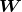

的第 1 列的乘积结果是新数组的第 1 行第 1 列的元素， 的第 2 行和 的第 1 列的结果是新数组的第 2 行第 1 列的元素。另外，在本书的数学标记中，矩阵将用黑斜体表示（比如，矩阵 ），以区别于单个元素的标量（比如，a 或 b）。这个运算在 Python 中可以用如下代码实现。
的第 1 列的乘积结果是新数组的第 1 行第 1 列的元素， 的第 2 行和 的第 1 列的结果是新数组的第 2 行第 1 列的元素。另外，在本书的数学标记中，矩阵将用黑斜体表示（比如，矩阵 ），以区别于单个元素的标量（比如，a 或 b）。这个运算在 Python 中可以用如下代码实现。如果掌握了 NumPy 多维数组的运算，就可以高效地实现神经网络。因此，本节将介绍 NumPy 多维数组的运算，然后再进行神经网络的实现。
简单地讲，多维数组就是“数字的集合”，数字排成一列的集合、排成长方形的集合、排成三维状或者（更加一般化的）N 维状的集合都称为多维数组。下面我们就用 NumPy 来生成多维数组，先从前面介绍过的一维数组开始。
>>> import numpy as np >>> A = np.array([1, 2, 3, 4]) >>> print(A) [1 2 3 4] >>> np.ndim(A) 1 >>> A.shape (4,) >>> A.shape[0] 4
如上所示，数组的维数可以通过 np.dim() 函数获得。此外，数组的形状可以通过实例变量 shape 获得。在上面的例子中，A 是一维数组，由 4 个元素构成。注意，这里的 A.shape 的结果是个元组（tuple）。这是因为一维数组的情况下也要返回和多维数组的情况下一致的结果。例如，二维数组时返回的是元组 (4,3)，三维数组时返回的是元组 (4,3,2)，因此一维数组时也同样以元组的形式返回结果。下面我们来生成一个二维数组。
>>> B = np.array([[1,2], [3,4], [5,6]]) >>> print(B) [[1 2] [3 4] [5 6]] >>> np.ndim(B) 2 >>> B.shape (3, 2)
这里生成了一个 3 × 2 的数组 B。3 × 2 的数组表示第一个维度有 3 个元素，第二个维度有 2 个元素。另外，第一个维度对应第 0 维，第二个维度对应第 1 维（Python 的索引从 0 开始）。二维数组也称为矩阵（matrix）。如图 3-10 所示，数组的横向排列称为行（row），纵向排列称为列（column）。
图 3-10 横向排列称为行，纵向排列称为列
下面，我们来介绍矩阵（二维数组）的乘积。比如 2 × 2 的矩阵，其乘积可以像图 3-11 这样进行计算（按图中顺序进行计算是规定好了的）。
图 3-11 矩阵的乘积的计算方法
如本例所示，矩阵的乘积是通过左边矩阵的行（横向）和右边矩阵的列（纵向）以对应元素的方式相乘后再求和而得到的。并且，运算的结果保存为新的多维数组的元素。比如， 的第 1 行和 的第 1 列的乘积结果是新数组的第 1 行第 1 列的元素， 的第 2 行和 的第 1 列的结果是新数组的第 2 行第 1 列的元素。另外，在本书的数学标记中，矩阵将用黑斜体表示（比如，矩阵 ），以区别于单个元素的标量（比如，a 或 b）。这个运算在 Python 中可以用如下代码实现。
>>> A = np.array([[1,2], [3,4]])
>>> A.shape
(2, 2)
>>> B = np.array([[5,6], [7,8]])
>>> B.shape
(2, 2)
>>> np.dot(A, B)
array([[19, 22],
[43, 50]])
这里， 和 都是 2 × 2 的矩阵，它们的乘积可以通过 NumPy 的 np.dot() 函数计算（乘积也称为点积）。np.dot() 接收两个 NumPy 数组作为参数，并返回数组的乘积。这里要注意的是，np.dot(A, B) 和 np.dot(B, A) 的值可能不一样。和一般的运算（+ 或 * 等）不同，矩阵的乘积运算中，操作数（A、B）的顺序不同，结果也会不同。
这里介绍的是计算 2 × 2 形状的矩阵的乘积的例子，其他形状的矩阵的乘积也可以用相同的方法来计算。比如，2 × 3 的矩阵和 3 × 2 的矩阵的乘积可按如下形式用 Python 来实现。
>>> A = np.array([[1,2,3], [4,5,6]])
>>> A.shape
(2, 3)
>>> B = np.array([[1,2], [3,4], [5,6]])
>>> B.shape
(3, 2)
>>> np.dot(A, B)
array([[22, 28],
[49, 64]])
2 × 3 的矩阵 和 3 × 2 的矩阵 的乘积可按以上方式实现。这里需要注意的是矩阵的形状（shape）。具体地讲，矩阵 的第 1 维的元素个数（列数）必须和矩阵 的第 0 维的元素个数（行数）相等。在上面的例子中，矩阵 的形状是 2 × 3，矩阵 的形状是 3 × 2，矩阵 的第 1 维的元素个数（3）和矩阵 的第 0 维的元素个数（3）相等。如果这两个值不相等，则无法计算矩阵的乘积。比如，如果用 Python 计算 2 × 3 的矩阵 和 2 × 2 的矩阵 的乘积，则会输出如下错误。
>>> C = np.array([[1,2], [3,4]]) >>> C.shape (2, 2) >>> A.shape (2, 3) >>> np.dot(A, C) Traceback (most recent call last): File "<stdin>", line 1, in <module> ValueError: shapes (2,3) and (2,2) not aligned: 3 (dim 1) != 2 (dim 0)
这个错误的意思是，矩阵 的第 1 维和矩阵 的第 0 维的元素个数不一致（维度的索引从 0 开始）。也就是说，在多维数组的乘积运算中，必须使两个矩阵中的对应维度的元素个数一致，这一点很重要。我们通过图 3-12 再来确认一下。
图 3-12 在矩阵的乘积运算中，对应维度的元素个数要保持一致
图 3-12 中，3 × 2 的矩阵 和 2 × 4 的矩阵 的乘积运算生成了 3 × 4 的矩阵 。如图所示，矩阵 和矩阵 的对应维度的元素个数必须保持一致。此外，还有一点很重要，就是运算结果的矩阵 的形状是由矩阵 的行数和矩阵 的列数构成的。
另外，当 是二维矩阵、 是一维数组时，如图 3-13 所示，对应维度的元素个数要保持一致的原则依然成立。
可按如下方式用 Python 实现图 3-13 的例子。
>>> A = np.array([[1,2], [3, 4], [5,6]]) >>> A.shape (3, 2) >>> B = np.array([7,8]) >>> B.shape (2,) >>> np.dot(A, B) array([23, 53, 83])
图 3-13 A 是二维矩阵、B 是一维数组时，也要保持对应维度的元素个数一致
下面我们使用 NumPy 矩阵来实现神经网络。这里我们以图 3-14 中的简单神经网络为对象。这个神经网络省略了偏置和激活函数，只有权重。
图 3-14 通过矩阵的乘积进行神经网络的运算
实现该神经网络时，要注意 、、 的形状，特别是 和 的对应维度的元素个数是否一致，这一点很重要。
的形状，特别是 和 的对应维度的元素个数是否一致，这一点很重要。
>>> X = np.array([1, 2]) >>> X.shape (2,) >>> W = np.array([[1, 3, 5], [2, 4, 6]]) >>> print(W) [[1 3 5] [2 4 6]] >>> W.shape (2, 3) >>> Y = np.dot(X, W) >>> print(Y) [ 5 11 17]
如上所示，使用 np.dot（多维数组的点积），可以一次性计算出 的结果。这意味着，即便 的元素个数为 100 或 1000，也可以通过一次运算就计算出结果！如果不使用 np.dot，就必须单独计算 的每一个元素（或者说必须使用 for 语句），非常麻烦。因此，通过矩阵的乘积一次性完成计算的技巧，在实现的层面上可以说是非常重要的。